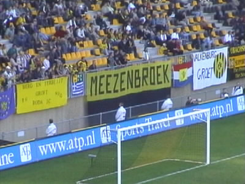

| Roda JC - Heerenveen 0-2 28 september 2001 |
De nauwelijks 100 Heerenveensupporters konden al na vier
minuten juichen voor het eerste doelpunt.
Hun drummerboy werd in de hoek gezet.
Anastasiou mist een droomkans op de gelijkmaker.
Even later mag Soetaers een vrije trap nemen. Het prachtige
schot wordt gekeerd door Vonk.
De beloofde knokpartij tussen MS en PmR ging niet door.
Als douceurtje toonde PmR een van zijn opvallende shirts.
Vlak na rust is het weer prijs....
Tchoutang met hippe polsreflectors was er na lange tijd bij.

Ook terug van weggeweest, de halve haan!

West werd in de gaten gehouden. Waarom?
En van wie is deze BMW?
Teleurgestelde supporter die bushokje heeft gemolesteerd,
belt vertwijfeld naar Carglass.
Rechts op de foto "Joey" uit het Roda Jeugdtalentenplan.
Pa bekijkt het Koempelvisitekaartje en geeft de volgende
schitterende wedstrijdanalyse: "Die Groningers (!) waren
veel beweeglijker, dan de Rodaspelers die wel de aardappel-
ziekte leken te hebben."
©KPD